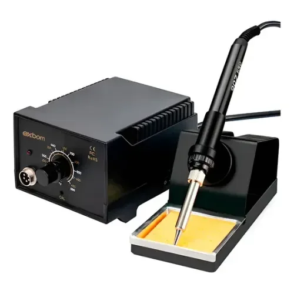
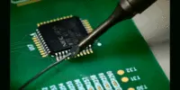

Prepare a bancada
Soldar é unir eletricamente e mecanicamente superfícies metálicas com uma liga de solda. Uma conexão bem executada depende de limpeza, transferência de calor e inspeção. Neste guia, o exercício é soldar terminais em uma placa de treino com furos passantes.

| Item | Função |
|---|---|
| Ferro ou estação e suporte | Aquecer a junção e apoiar a ferramenta com segurança. |
| Solda e fluxo para eletrônica | Favorecer a união das superfícies. Confira a liga e as instruções do fabricante. |
| Limpador de ponta | Remover resíduos sem desgastar o revestimento da ponta. |
| Pinça, suporte de placa e alicate | Imobilizar peças e aparar terminais. |
| Exaustão localizada e óculos | Reduzir exposição à fumaça do fluxo e proteger contra respingos e cortes. |
| Multímetro e boa iluminação | Inspecionar continuidade e possíveis pontes entre trilhas. |
Use uma placa sem alimentação, com baterias e cabos desconectados. Organize a bancada para que o cabo do ferro não puxe a ferramenta. Evite comida e bebida no local e lave as mãos ao terminar.
O guia de preparação da Adafruit mostra como organizar ferramentas e peças.
Ajuste o processo
Comece em uma placa de treino. Escolha uma ponta que encoste no terminal e na ilha sem tocar os vizinhos. Uma ponta muito fina pode transferir pouco calor; uma muito grande pode alcançar componentes próximos.
Ajuste a estação conforme a liga, a ponta e o componente. Não existe temperatura ou número de segundos universal. Se a solda não fluir, revise limpeza, contato e tamanho da ponta antes de simplesmente aumentar a temperatura.
Limpe a ponta conforme a orientação do fabricante e mantenha uma camada fina de solda sobre ela. Essa camada favorece a transferência de calor. Não lixe a ponta revestida.
Faça a junção em quatro etapas


Se a junção exigir aquecimento prolongado, pare e deixe esfriar. Reavaliar o processo reduz a chance de levantar a ilha ou danificar o componente.
Verifique antes de alimentar
Em um terminal passante, procure molhamento do pino e da ilha e uma transição contínua entre as superfícies. O brilho sozinho não define qualidade: algumas ligas sem chumbo apresentam acabamento mais fosco.
| Observação | Possível problema | Próximo passo |
|---|---|---|
| Bola que não molha a ilha | Superfície oxidada ou calor insuficiente | Limpar, aplicar fluxo apropriado e refazer a junção. |
| Ponte entre terminais | Excesso de liga | Remover o excesso com ferramenta adequada e reinspecionar. |
| Trinca ou superfície movimentada | Peça moveu durante a solidificação | Refazer com a peça imobilizada. |
| Ilha levantada ou placa escurecida | Aquecimento excessivo ou esforço mecânico | Interromper e avaliar o reparo antes de ligar. |
Consulte exemplos de defeitos no guia de problemas de soldagem da Adafruit.
Com a placa desenergizada, verifique continuidade nos caminhos esperados e resistência entre alimentação e GND. O bip isolado não prova um curto: componentes e capacitores influenciam a leitura. Compare com o circuito e observe se a leitura muda.
Exercício de bancada
Praticar em material de treino antes de trabalhar em sensores ou controladoras permite aprender com menos retrabalho em componentes do projeto.
Próximos passos
Uma boa junção começa na preparação e termina na inspeção. Quando os terminais passantes ficarem consistentes, avance para conectores de fio, alívio de esforço e técnicas de retrabalho compatíveis com o circuito.
Para integrar eletrônica e programação, continue com o guia de Arduino ou com a montagem do seguidor de linha.